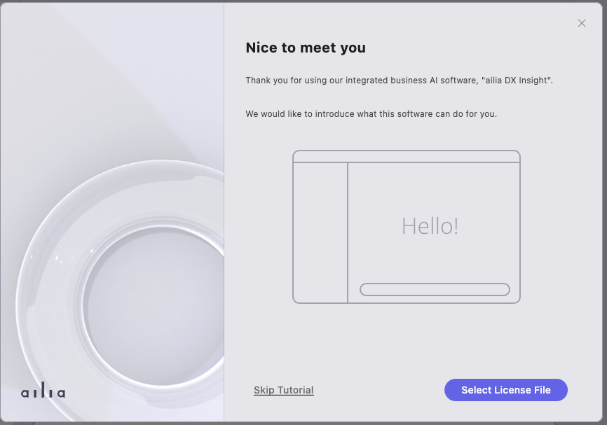
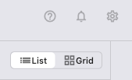
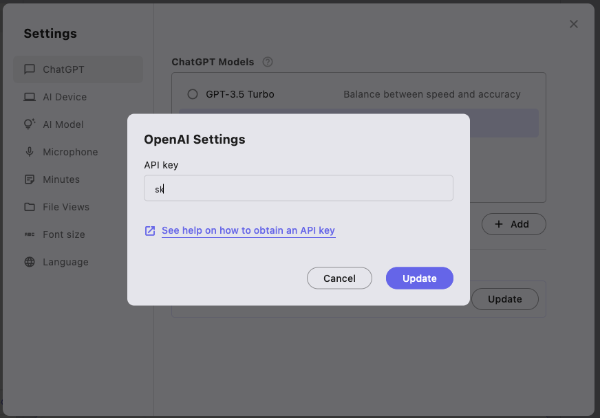
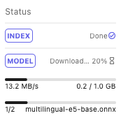

Download
Download ailia DX Insight and unzip the zip file.
Launch
For Windows, double-click on ailia_dx_insight.exe to launch it. For macOS, right-click on ailia_dx_insight.app and select Open to launch it.
Obtaining OpenAI's API Key
Register for an account on the OpenAI website and obtain OpenAI's API key. You can use ailia DX Insight without entering the OpenAI API key, but the functionality will be limited.
Setup
A tutorial screen will be displayed at the first launch.

At the final screen of the tutorial, you can set up the OpenAI API key.
Setting the OpenAI API Key
- To set it up from the tutorial
- Proceed to the end of the tutorial, to "Set API Key".
- Enter your OpenAI API key starting with "sk-" in the textbox under "OpenAI API Key".

- Press the "Done" button.
- To set it up from the regular screen
- Click the gear icon on the top right corner of the screen.

- Enter your OpenAI API key starting with "sk-" in the textbox displayed in the dialog.

- Select the version of chatGPT you want to use and press the "Close" button.
- Click the gear icon on the top right corner of the screen.
Downloading the AI Model
After finishing the initial tutorial, the download of the AI model will start.
The progress of the download can be checked at the bottom of the sidebar on the left.

After the download is complete, ailia DX Insight will be ready for use.